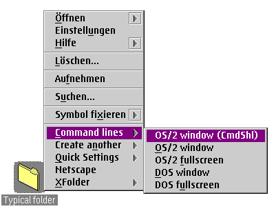

The XFolder WPS class enables you to freely add new items to the context menu of all folders on your system.
Here's a screenshot for the preset XFolder configuration (as defined by the install script):

(Obviously, this screenshot was taken on a German OS/2 version, but this shouldn't make any difference.)
You will see the same new popup items on all folders on your system. What happens now if you press one of the items in the submenu is that XFolder performs the selected action on just the folder that the context menu was opened for.
The default options installed by installation script are:
See "Creating objects with XFolder" for more.